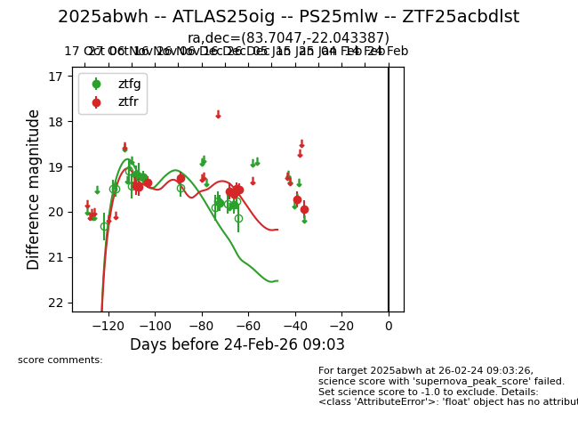
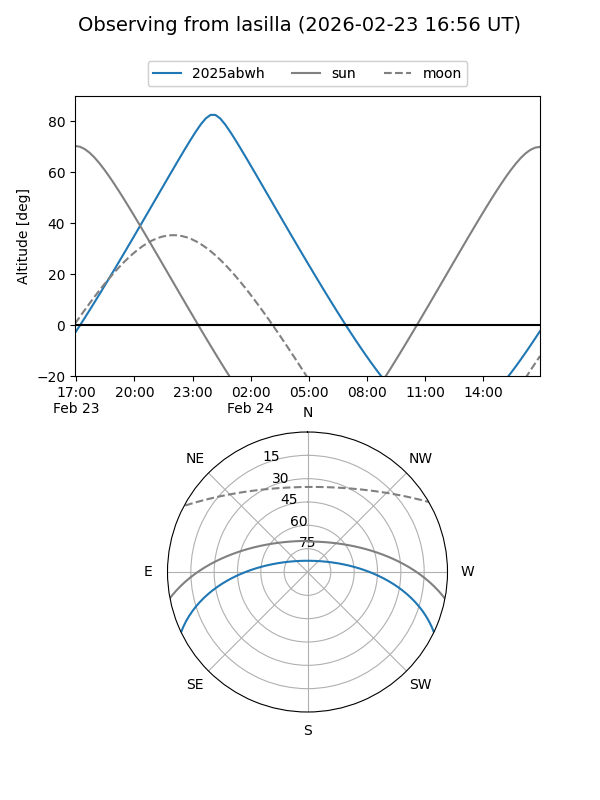
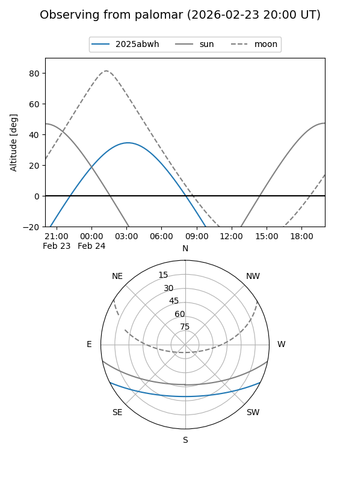
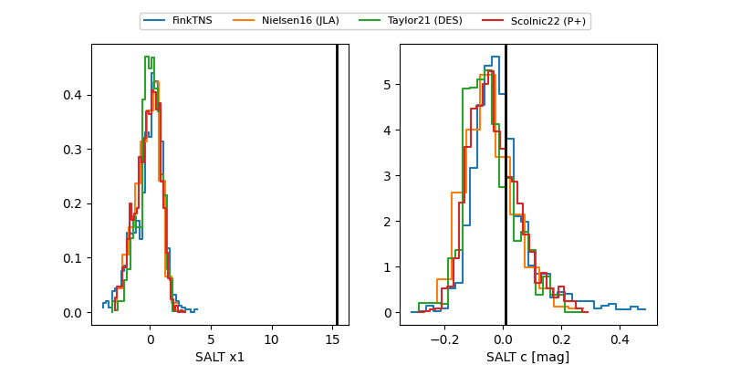

2025abwh
Target 2025abwh at 2026-01-19 06:55
Aliases and brokers:
FINK: link
Lasair: link
ALeRCE: link
TNS: link
YSE: link
alt names
ZTF25acbdlst (ztf,fink_ztf)
2025abwh (tns,yse)
ATLAS25oig (atlas)
PS25mlw (panstarrs)
Coordinates:
equatorial (ra, dec) = 83.7047,-22.04339
equatorial (HMS+DMS) = 05:34:49.13,-22:02:36.19
galactic (l, b) = (225.5084,-26.21954)
Flags:
Photometry:
last ztfg=19.85, ztfr=19.94
4 ztfg, 10 ztfr detections
Lightcurve

Visibility


Additional plots
